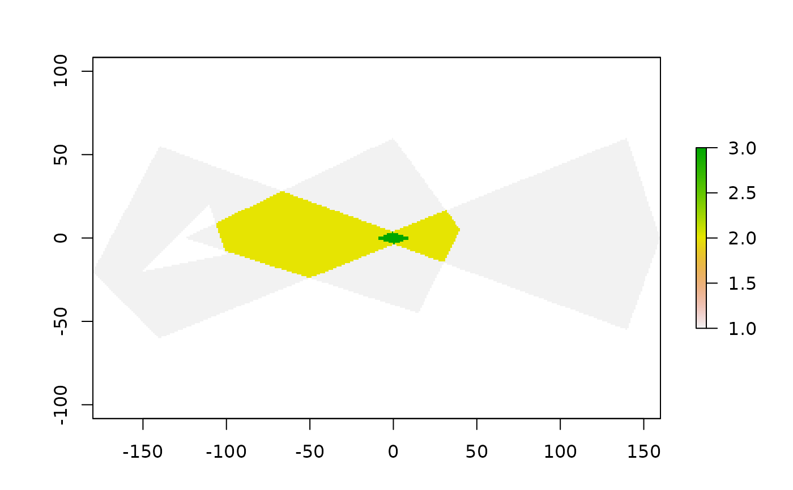

Rasterize set of polygons
fasterize(
sf,
raster,
field = NULL,
fun = "last",
background = NA_real_,
by = NULL
)a polygon vector or data frame object with a geometry column of POLYGON and/or MULTIPOLYGON (equivalent) objects.
A raster object. Used as a template for the raster output.
Can be created with raster::raster().
The fasterize package provides a method to create a raster object from
an polygon dataset.
character (or numeric vector). The name of a column in sf,
providing a value for each of the polygons rasterized. If NULL (default),
all polygons will be given a value of 1. If a numeric vector this value
will be used as the value given to the pixel. (No recyling is done).
character. The name of a function by which to combine overlapping
polygons. Currently takes "sum", "first", "last", "min", "max", "count", or
"any". Future versions may include more functions or the ability to pass
custom R/C++ functions. If you need to summarize by a different function,
use by= to get a RasterBrick and then raster::stackApply() or
raster::calc() to summarize.
numeric. Value to put in the cells that are not covered by any of the features of x. Default is NA.
character. The name of a column in sf by which to aggregate
layers. If set, fasterize will return a RasterBrick with as many layers
as unique values of the by column.
A raster of the same size, extent, resolution and projection as the provided raster template.
This is a high-performance replacement for raster::rasterize().
The algorithm is based on the method described in course materials provided by Wayne O. Cochran. The algorithm is originally attributed to Wylie et al. (1967) doi:10.1145/1465611.1465619 .
Note that original implementation worked only for sf dataframes of class "sf", but this now works for any polygon vector (sfc, wkt, wkb, geos) or dataframe with a polygon vector supported by the wk package handlers.
Wylie, C., Romney, G., Evans, D., & Erdahl, A. (1967). Half-tone perspective drawings by computer. Proceedings of the November 14-16, 1967, Fall Joint Computer Conference. AFIPS '67 (Fall). doi:10.1145/1465611.1465619
library(sf)
#> Linking to GEOS 3.10.2, GDAL 3.4.1, PROJ 8.2.1; sf_use_s2() is TRUE
library(fasterize)
p1 <- rbind(c(-180,-20), c(-140,55), c(10, 0), c(-140,-60), c(-180,-20))
hole <- rbind(c(-150,-20), c(-100,-10), c(-110,20), c(-150,-20))
p1 <- list(p1, hole)
p2 <- list(rbind(c(-10,0), c(140,60), c(160,0), c(140,-55), c(-10,0)))
p3 <- list(rbind(c(-125,0), c(0,60), c(40,5), c(15,-45), c(-125,0)))
pols <- st_sf(value = rep(1,3),
geometry = st_sfc(lapply(list(p1, p2, p3), st_polygon)))
r <- raster(pols, res = 1)
r <- fasterize(pols, r, field = "value", fun="sum")
plot(r)
